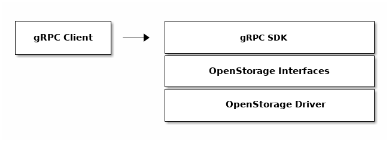

Architecture

Overview
The software development kit for OpenStorage is based on gRPC, allowing clients to be automatically generated in multiple languages. The SDK also provides a gRPC REST Gateway which automatically changes REST requests to gRPC.
Different OpenStorage drivers may run the OpenStorage gRPC and REST servers on different ports. Please, refer to your deployed driver documentation for instructions on how to setup a connection to the gRPC server.
OpenStorage API calls are ment to be idempotent to ensure consistency across calls, unless otherwise specified.
Protocol Buffers gRPC Source File
The gRPC bindings are created from api/api.proto file
available in the OpenStorage github repo.
REST gRPC Gateway
REST clients can benefit from the SDK server's gRPC REST Gateway which is able to translate REST calls to gRPC requests.
Swagger is also provided by going to the REST gRPC Gateway
and passing the path /swagger-ui.
Security
Starting at v0.38.0, the OpenStorage SDK supports security based on the following set of technologies:
- TLS: The SDK now supports TLS to secure client server communications.
- Authentication: Support for authentication based on JWT and OpenID Connect(OIDC)
- Authorization: Support for role based access control (RBAC) access to OpenStorage SDK API calls
- Ownership: Support for resource access control based on owner, groups, and collaborators.
Authentication
OpenStorage SDK server authenticates and authorizes access using the token provided by the client. The SDK server expects the token to be passed in the metadata of the gRPC context. Here is an example of how to pass the token in gRPC:
import "google.golang.org/grpc/metadata"
md := metadata.New(map[string]string{
"authorization": "bearer" + token,
})
ctx = metadata.NewOutgoingContext(context.Background(), md)md = []
md.append(("authorization", "bearer "+token))
# Now add metadata to the call
clusters = api_pb2_grpc.OpenStorageClusterStub(channel)
response = clusters.InspectCurrent(api_pb2.SdkClusterInspectCurrentRequest(), metadata=md)If your language supports gRPC interceptors, you may be able to simply your client code by making the interceptor add the authorization token on every call automatically.
To pass the token using the REST Gateway, you can use the standard header:
"authorization": "bearer token..."
Error Handling
All API calls use the standard gRPC status.
OpenStorage SDK Implementations
In this document, examples will refer to both the OpenStorage SDK Mock and Portworx OpenStorage drivers.